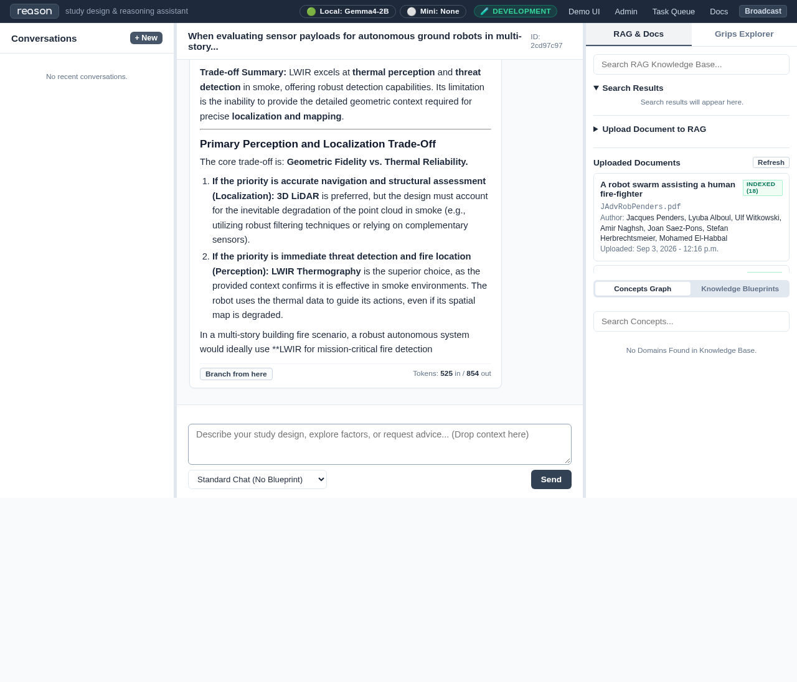

Doctest Report: Trial 1: Document Ingestion and Context-Grounded Reasoning
Date: 2026-11-11 14:51:36
Local Model: google/gemma-2-2b-it
Status: PASSED
Total Execution Time: 58.6s
Scenario & Research Task
We imagine a researcher who has the following task and resources: An autonomous robotics research team is designing an empirical intervention trial for a tracked search-and-rescue robot operating inside a multi-story collapsed structure under heavy smoke and rubble. The researcher uses the Verbal / Reason interface to formulate hypotheses, evaluate causal and statistical trade-offs, compute factorial parameters in the sandbox, and structure the domain knowledge graph.
Animated Walkthrough

Interaction Trace: Researcher & Verbal / Reason
Step 1: Literature Ingestion & Vector Indexing (1.4s)
The Researcher (Thinking & Formulation):
Before designing our field intervention trial, we need an authoritative knowledge base grounded in empirical robotics literature. We index 17 domain papers to provide factual anchors for sensor attenuation curves, locomotion power draws, and mission failure modes.
The Researcher (Evaluation & Decision):
Vector database populated with 51 semantic chunks across 3 research papers. The literature corpus is ready for semantic retrieval in the Reason UI.
Step 2: Context Chip Formulation & Prompt Submission (3.0s)
The Researcher (Thinking & Formulation):
We need to clearly isolate the causal factors governing sensor failure in structural fires. LiDAR provides metric geometry for SLAM but suffers backscatter in dense aerosols. LWIR penetrates obscurants but lacks metric depth. We attach the literature chunk and ask Reason to synthesize the exact trade-off boundaries.
Researcher Inquiry (Entered in Demo UI):
When evaluating sensor payloads for autonomous ground robots in multi-story building
fires, what are the primary perception and localization trade-offs between 3D LiDAR point
clouds and long-wave infrared (LWIR) thermography in dense, aerosolized smoke?
Retrieved Literature Context (RAG Recall):
Sen Li et al. (2023) — Section: An Indoor Autonomous Inspection and Firefighting Robot Based on SLAM and Flame Image Recognition - Un-headered Section (DOI: 10.3390/fire6030093) [Chunk d1a842af-5c41-4faa-9340-1a2210c559de]: “Indoor fire accidents have become increasingly common in recent years. More and more firefighting robots have been designed to solve the problem of fires. However, the indoor environment is very compl”

Step 3: Live Inference & Response Capture (49.9s)
Local LLM (google/gemma-2-2b-it) generated 3046 characters of context-grounded synthesis.
Retrieved Literature Context (RAG Recall):
Sen Li et al. (2023) — Section: An Indoor Autonomous Inspection and Firefighting Robot Based on SLAM and Flame Image Recognition - Un-headered Section (DOI: 10.3390/fire6030093) [Chunk d1a842af-5c41-4faa-9340-1a2210c559de]: “Indoor fire accidents have become increasingly common in recent years. More and more firefighting robots have been designed to solve the problem of fi…”
Verbal / Reason Response (Synthesized by: google/gemma-2-2b-it):
Based on the provided excerpt, here are some key trade-offs between 3D LiDAR point clouds
and long-wave infrared (LWIR) thermography for autonomous ground robots in multi-story
building fires:
Trade-off #1: Perception & Smoke Visibility
LiDAR: Provides detailed 3D information about the environment, including object size,
shape, and distance. This is crucial for navigating complex environments and identifying
obstacles in dense smoke conditions. The excerpt mentions LiDAR as a component of SLAM
(SLAM uses sensor data like LiDAR to map the environment).
LWIR: Excellent at detecting heat signatures within smoke. This can help identify hot
spots, potential fire sources, or even indicate locations where thermal plumes might
obscure visual views for LiDAR.
Trade-off #2: Localization Accuracy in Smoke & 3D Understanding
LiDAR: While it provides a dense cloud of points, its accuracy is often degraded by smoke
and dust particles. This can lead to difficulties in precisely identifying fire source
locations or even mapping the environment accurately. The excerpt states that sensors are
used for SLAM, but this process could be hampered by smoke.
LWIR: Provides more direct information on heat signatures, potentially enabling faster
identification of fire sources. However, LWIR alone might not provide complete 3D context
necessary for accurate localization in dense smoke scenarios.
Trade-off #3: Integration & Operational Challenges
The excerpt focuses on the robot's autonomous inspection and fire extinguishing functions.
Integrating these features with both LiDAR and LWIR sensors likely presents unique
challenges. For example, how do you combine sensor data to identify objects and infer
their temperature?
Also, real-world operational constraints like battery life, mobility limitations, and
dust/smoke handling could influence the selection of sensor payloads for specific
environments.
Key Takeaways:
Both LiDAR and LWIR offer distinct advantages in multi-story building fires.
LiDAR is crucial for navigating through smoke, but its accuracy can be challenged.
LWIR excels at heat detection, potentially aiding localization even when visibility is
poor.
The choice between these sensors depends on the specific fire scenarios, robot design
considerations, and operational goals.
Recommendations:
Sensor Fusion: Combining both LiDAR and LWIR data through sensor fusion techniques can
provide a more complete understanding of the environment and potentially enhance
localization accuracy in smoke-filled environments.
Offline/Real-Time Processing: Depending on the level of autonomy, offline processing of
both sensors' raw data to create accurate fire maps is important. This could help with
early detection, location identification, and even automated decision-making about the
robot’s actions.
Finally, further research into optimized sensor algorithms and robust fusion techniques
for smoke-filled environments will be crucial for improving the reliability and efficiency
of autonomous firefighting robots.
The Researcher (Evaluation & Decision):
Verbal / Reason identified three critical causal factors for our experiment: 1) Sensor payload power draw (LiDAR+Compute draws ~110W vs. 25W baseline), 2) Terrain locomotion resistance (heavy rubble demands ~460W vs. 280W on concrete), and 3) Battery capacity (1200Wh pack with 20% reserve = 960Wh usable). These factors interact in combinatory ways that require quantitative modeling in Trial 2.

